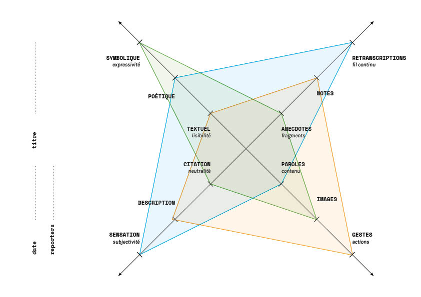

<!DOCTYPE html>
<html lang="en" dir="ltr">
  <head>
    <meta charset="utf-8">
    <meta name="viewport" content="width=device-width, initial-scale=1, shrink-to-fit=no">
    <title>Performing Knowledge — documentation en direct</title>
    <link rel="stylesheet" href="style.css">
  </head>
</html>
<body>

<p></p>
<a href="www.g-u-i.net/projects/performing-knowledge" target="blank"><p><span class="s3">www.g-u-i.net + à propos du projet </span></p></a>
<p class="section"><span class="s8">documentation directe : </span><span class="s5">lecture à 18h50</span></p>

<p class="section">23 juin 2018<br/><span class="s4">Nanterre Amandiers</span><p>

<!--<div class="caption">
  <p><span class="s1">Opening the Circle: Performance Philosophy &/as a radical equality of attention </span><br/> Laura&nbsp;Cull&nbsp;Ó&nbsp;Maoilearca</p>
  <p><span class="s1">En conversation avec un.e inconnu.e </span><br/>Claudia&nbsp;Triozzi</p>
  <p><span class="s1">Le théâtre comme laboratoire</span><br/>Frédérique&nbsp;Aït-Touati</p>
  <p><span class="s1">Sauter comme Nijinski</span><br/>Olivier&nbsp;Normand</p>
  <p><span class="s1">Incarner le savoir. La recherche comme création d’une condition collective</span><br/>Ambra&nbsp;Pittoni </p>
  <p><span class="s1">Attention/distraction: développer un regard performatif</span><br/>Chloé&nbsp;Déchery</p>
  <p><span class="s1">Peachy Coochy: partage de bonnes pratiques en recherche-création  en  France.</span><br/></p>
  <p><span class="s1">Histoires,  théories  et  pratiques  de  l’artiste-enseignant-chercheur</span><br/></p>
  <p><span class="s1">The  Artist-as-Researcher  /  Theorist  /  Scholar  /  Philosopher  :  opening  up  ways  of  thinking  on  and  through  the  stage</span><br/></p>
  <p><span class="s1">The  Long  Table  “On  Unfinished  Business”  </span><br/></p>
</div>-->

<div class="text">
  
</div>

<p class="section">22 juin 2018<br/><span class="s4">Centre Pompidou</span><p>

<div class="caption">
  <p><span class="s1">In  Place  of  Another</span><br/>Tim&nbsp;Etchells, Terry&nbsp;O’Connor</p>
  <p><span class="s2">Neurosciences  et  créativité:  vers  un  positionnement  du  spectateur</span><br/>Yvain&nbsp;Juillard, Yves&nbsp;Rossetti   </p>
  <p><span class="s3">Performer  la  recherche </span><br/>Arthur&nbsp;Igual </p><br/><br/>
  <p><span class="s4">Amis,  il  faut  faire  une  pause  (extrait) </span><br/>Julien&nbsp;Fournet</p>
  <p><span class="s5">Quel(s)  geste(s)  pour  la  recherche  ?  Le  savoir  a-t-il  un  corps  ?</span><br/>Barbara&nbsp;Formis,  Alix&nbsp;de&nbsp;Morant </p>
  <p><span class="s6">Pour  une  thèse  vivante </span><br/> Claudia&nbsp;Triozzi</p>
</div>

<div class="text">
  <p><span class="s1">Dis à Paris que parfois c’est mieux de ne pas savoir ce que tu cherches.</span></p>
  <p><span class="s2">Osez le déplacement ! Ouvrez le champ des possibles en condamnant le monde hiérarchisé pour travailler sur l’écoute : </span><span class="s3">Comment faire entrer Marx ?</span></p>
  <p><span class="s1">Au fond, c’est une perspective sadique du dispositif :  le performeur est comme un messager, il est le serviteur du texte. </span></p>
  <p><span class="s4">Un jeu - de cartes - Où est Tim Etchells? </span><span class="s5">Nietzsche veut penser à coups de marteau, Montaigne par sauts et gambades; Michaux, goutte à goutte ; en plateaux, Deleuze et Guattari ; Spinoza en spirale</span></p>
  <p><span class="s3">Karl Marx est dans la salle ! </span><span class="s1">C’est un exercice de pouvoir. </span><span class="s3">La marchandise a deux formes, valeur d'échange et d'usage.</span></p>
  <p><span class="s1">Un écran de projection accueille la traduction française de son récit anglais.</span></p>
  <p><span class="s6"></span><br></p>
  <p><span class="s5">une introduction à la pensée surf </span><span class="s6">prend son départ dans la vagueur</span></p>
  <p><span class="s5"> (à la différence de la pensée randonnée : on tombe sur des clairières, on avance derrière le guide )</span></p>
  <p><span class="s1">C’est une performance coopérative, l’</span><span class="s3">engagement physique permet l'émergence de la pensée</span></p>
  <p><span class="s6"></span><br></p>
  <p><span class="s3">vous êtes des abstractions, c'est clair maintenant pour moi.</span></p>
  <p><span class="s4"> "beaucoup de méta aujourd'hui"</span></p>
  <p><span class="s2">Ce qu’on voit n’est pas réellement ce qui existe, on voit ce que notre cerveau nous donne à voir.</span></p>
  <p><span class="s6"></span><br></p>
  <p><span class="s2">Tout se passe dans un processus d’écoute. </span></p>
  <p><span class="s4">L’intime, le doute, la fiction... </span></p>
  <p><span class="s4">est-ce qu'on peut se mettre entre deux zones ? </span></p>
  <p><span class="s4">Est-ce que j'ai le droit d'être non-hybride ?</span></p>
  <p><span class="s2">Les systèmes sensoriels sont toujours fatigables - </span><span class="s5">Ceci est un paquet de sensations - </span><span class="s3">La vie de l’attente est plus vivante quand elle n’est pas jouée</span><span class="s5"><span class="Apple-tab-span">  </span> </span></p>
  <p><span class="s5">LE VISAGE EST LA COLERE</span></p>
  <p><span class="s5">Feelings are facts</span></p>
  <p><span class="s5">C’est la vie gestuelle des idées</span></p>
  <p><span class="s5">je voulais vous proposer un massage moral</span></p>
  <p><span class="s5">boire de la tisane</span></p>
  <p><span class="s5">enlever ses chaussures</span></p>
  <p><span class="s5">des petits toboggans sensibles de la pensée</span></p>
  <p><span class="s2">La permission de penser autrement</span></p>
  <p><span class="s3">Lire Marx pour calmer une crise d'hypoglycémie </span></p>
  <p><span class="s6"></span><br></p>
  <p><span class="s5">Un événement est comme une sorte de petit monument éphémère qui résiste un peu au temps, comme un CHATEAU DE SABLE</span></p>
  <p><span class="s3">Casser la linéarité, c'est important - </span><span class="s2">Le cerveau n’est sensible qu’au changement.</span></p>
  <p><span class="s5">je saute dans le texte</span></p>
  <p><span class="s5">ça bouillonne d’activité, une énergie intérieure est créée, BOUM, et c'est l'explosion, BOUM tout est à recommencer</span></p>
  <p><span class="s6"></span><br></p>
</div>

<p class="section">21 juin 2018<br/><span class="s2">msh paris nord</span>

<div class="caption">
  <p><span class="s1">Newton, Pandora et Sawyer</span><br/> Chloé&nbsp;Maillet et Louise&nbsp;Hervé</p>
  <p><span class="s5">Corps–Voix</span><br/> Claudia&nbsp;Triozzi</p>
  <p><span class="s6">Désirs, déchets, projets : Atelier de recyclage performatif</span><br/> Chloé&nbsp;Lavalette et Caroline&nbsp;Lion</p>
  <p><span class="s8">Performer l’archive</span><br/> Marion&nbsp;Boudier et Guillaume&nbsp;Mazeau</p>
  <p><span class="s9">Hunt & Darton Café</span><br/> Jenny&nbsp;Hunt et Susanna&nbsp;Hurst</p>
  <p><span class="s3">Performer les savoirs / Performing Knowledge</span><br/> Marion&nbsp;Boudier et Chloé&nbsp;Déchery</p>
</div>
<div class="text">
  <p><span class="s1">le personnage est un perroquet kéa nestor-notabiliste qui habite dans une île du sud de la Nouvelle-Zélande. Son intelligence est comparée à celle des humains</span></p>
  <p><span class="s1">Wattana, (un orang outan): quand elle est arrivée à Paris, elle a commencé à faire des nœuds ; 5 ou 6 kéas étaient autour de ses baskets et <span class="s1">très patiemment ils défaisaient les lacets</span>.</p>
  <p><span class="s1">Une pensée pour Coco.</span></p>
  <p><span class="s1">Après avoir créé son artefact, le kéa l’a montré à Chloé, l’a posé devant elle, et il est parti. C’était un cadeau. Il faut démonter sans abîmer, reconstruire, </span><span class="s3">proposer un autre format de recherche</span></p>
  <p><span class="s3">Des savoirs incarnés et expérientiels</span></p>
  <p><span class="s4"></span></p>
  <p><span class="s5">Le sol tremble sur la course des participants à l'atelier…</span></p>
  <p><span class="s3">Un parcours hybride – partagé sur une ligne invisible à être sans cesse réinventée</span></p>
  <p><span class="s5">TATATATATATATATTATatatatatatatatatatatatata </span><span class="s3">Des expériences sensibles pour colorer notre écoute !</span></p>
  <p><span class="s5">vacille !!  Vocale. Tatatata…Mmmmh… </span><span class="s3"> Comment tenir les écarts entre artiste et chercheur ?</span></p>
  <p><span class="s5">Souffle, ressentir le sol, marche.</span></p>
  <p><span class="s6">Chercher l’espace de la bouche.</span></p>
  <p><span class="s5">Acceleration. Tatatata…Mmmmh… </span><span class="s3"> Partir du laboratoire, de nos pratiques de scène</span></p>
  <p><span class="s7">Dispersion. </span><span class="s8">Passé-Présent. Parti pris.</span></p>
  <p><span class="s5">Mmmbah (comme les poissons), Babababa…</span></p>
  <p><span class="s5">Comprendre l'espace. Trois par trois, deux par deux, babababa… </span><span class="s9">travailler avec innocence</span></p>
  <p><span class="s5">Diagonale et AAAAAaaaaaaah </span><span class="s9">Archive = combustible ≠ fin en soi. </span><span class="s5"> (le son s'échappe). Chef d'orchestre.</span></p>
  <p><span class="s3">Le corps n’est pas qu’une enveloppe.</span></p>
  <p><span class="s3">Un enfant entre dans la salle… et quelque chose change dans l’air.:</span></p>
  <p><span class="s5">L'espace vide est dangereux.</span></p>
  <p><span class="s6">Ne vous inquiétez pas cette performance a déjà été crash testée par la même équipe.</span></p>
  <p><span class="s4"></span></p>
  <p><span class="s9"><i>Chapeau ananas, Gâteau rose, Petit fond sonore</i></span></p>
  <p><span class="s9">chercher la fourchette faire du cirque et de la géographie manger du chocolat verser de l'eau en sursautant en robe avec les ananas sur la tête</span></p>
  <p><span class="s9">This is art. Keep on dropping scones!</span></p>
  <p><span class="s3">Une traversée d’enfant</span></p>
  <p><span class="s3">=&gt; c’était à moi mais je le répète - nous aussi nous avons notre petit moment de performance … samedi 21h au bar du théâtre des Amandiers !</span></p>
  <p><span class="s5">“<i> J'aimerais que l'on fasse un paysage sonore, de l'orage ou du vent, une machine. J'aimerais que chacun produise un son, dans un cercle, dans l'espace de la pièce : ZAMM, ZUUU, TCHAAANNN !!!</i></span></p>
  <p><span class="s3">Deuxième traversée d’enfant</span></p>
  <p><span class="s3">changement d'énergie.... S'éloigner de la logique de l'industrie du théâtre, comment associer ou s'associe le spectateur ?</span></p>
  <p><span class="s11">Et voilàaaaaa - ta-ci-tuur-no - e-le-men’t-o - po-sse-ssssi-vvvo! Mah ! Mah ! </span><span class="s3">Situation / Détournement/ Dérive - si quelque chose semble digne d’intérêt tu sonnes la cloche</span></p>
  <p><span class="s5">BRRRououuuoRRRR!!!</span></p>
  <p><span class="s6">une interview pour sa thèse qui a mal tourné.</span><span class="s12"></span></p>
  <p><span class="s3">Danger: le chercheur qui veut devenir artiste. Quand l’université se charge des arts elle les calme// il faut que ça soit non seulement un lieu de partage mais aussi d’affrontement</span></p>
  <p><span class="s5">(frustration de voir et de ne pas faire) - </span><span class="s9">   Faire l’histoire autrement</span></p>
  <p><span class="s3">Interroger le savoir ou rendre compte du savoir ? Pas seulement performer/ représenter l’archive, mais savoir pourquoi on le fait.</span></p>
  <p><span class="s4"></span></p>
  <p><span class="s3">l’esquisse d’une nuit étoilée</span></p>
</div>




</body>
</html>
